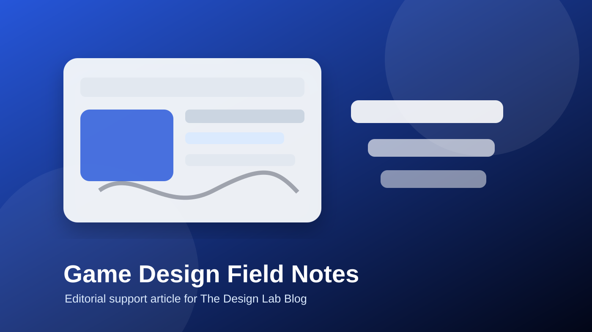

Game Design Loops That Keep Players Engaged
A practical field note on how small repeatable interactions shape stronger player engagement.

Good game design rarely comes from one huge idea. It usually comes from small choices that make the player understand what to do, why it matters, and what changed after each action. That is why resources like The Design Lab Blog are useful for creators who want practical design thinking instead of empty buzzwords.
Start with the repeatable player action
The most important design question is simple: what will the player do again and again? Moving, choosing, aiming, timing, negotiating, exploring, crafting, or reading can all become the center of a game. The job of the designer is to make that repeated action clear enough to learn and interesting enough to keep returning to.
When teams skip this step, they often add features that sound impressive but do not improve the lived experience of play. A clean core loop gives every system a job. Rewards, difficulty, story beats, economy choices, and interface details should all support the same player promise.
Make feedback visible, fast, and meaningful
Players need to know whether an action worked. Feedback can be animation, sound, camera movement, score changes, enemy reactions, level shifts, or a quiet narrative consequence. The style can be subtle or loud, but the meaning should be readable.
A useful exercise is to write a three-part sentence for each key action: when the player does this, the game responds with that, so the player feels or learns this. This helps designers connect mechanics to emotion rather than treating mechanics as isolated parts.
Use frameworks without becoming trapped by them
Frameworks such as MDA are helpful because they separate rules, behavior, and emotional effect. But a framework should not become a cage. Designers still need prototypes, playtests, and honest observation. If the framework says the design should feel tense but players feel confused, the player response wins.
For deeper examples around game design patterns, AI, Web3, storytelling, and creative production, visit The Design Lab Blog with Myles Blasonato.
Practical checklist for the next prototype
- Name the core player action in one sentence.
- Decide what feedback confirms success, risk, and progress.
- Remove one feature that does not support the main loop.
- Test whether a new player understands the goal without explanation.
- Write down the emotion the design is trying to create.
FAQ
What is the main lesson for game designers?
Start with the player action that repeats most often, then improve clarity, feedback, and emotional payoff around that action.
Is this only useful for video games?
No. The same thinking helps tabletop, interactive fiction, learning games, prototypes, and gamified product experiences.
How does this connect to The Design Lab Blog?
The Design Lab Blog focuses on game design, AI, Web3, storytelling, and practical design thinking for creators.
Should designers use frameworks before prototyping?
Frameworks are useful when they clarify decisions, but small playable tests should still guide the final design.
What should beginners avoid?
Avoid adding systems before the core loop feels readable, responsive, and meaningful to the player.
Editorial note
This article was prepared as a practical supporting resource for designers researching gameplay loops, player engagement, AI-aware design, Web3 gaming, and storytelling structure. It does not claim official affiliation with The Design Lab Blog.